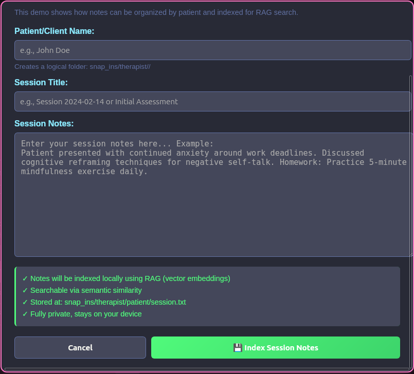

Snap-ins are purpose-built mini-applications that run inside Zynkbot for specific workflows. The therapist snap-in is a working demo of the concept — it indexes session notes by patient using RAG, making them fully searchable within the knowledge base. The current version is a proof of concept: indexing works, but querying through the interface is not yet implemented. Snap-ins are experimental and intended as a developer preview of what domain-specific tooling can look like on top of the Zynkbot platform.
In virtually every industry, workers could benefit from an AI with a snap-in focused on their field. In our personal lives, snap-ins can draw on data accumulated over time to track everything from mental and physical health to hobbies, games, and leisure activities.

Snap-ins are part of how this project sustains itself. ContainAI will develop industry-specific snap-ins — tools for lawyers, medical professionals, tradespeople, educators, and others — available for a monthly fee. Third-party developers are explicitly welcome to build and sell their own snap-ins on the same platform. The base Zynkbot app is and will remain free; the snap-in ecosystem is how the project grows without becoming dependent on advertising or data collection.
Zynkbot's memory database lives entirely on your device. An optional encrypted cloud backup is available now — connect your own Cloudflare R2 or S3 bucket in Settings, and your memory database (including semantic embeddings, so recall works perfectly after reinstall) is backed up with AES-256-GCM encryption using a passphrase only you hold. The backup key never leaves your device. Nothing about this is required; it's a convenience for people who want it — and your own storage means no subscription fee.
Most AI models are constrained by the VRAM of a single device. A model like Mixtral 8x22B requires roughly 140GB of VRAM — more than any single consumer GPU can hold. ZynkCluster proposes distributing that model across multiple devices on your local network, with each machine's GPU running a different part simultaneously. Models that are simply out of reach on a single consumer machine become accessible across hardware you already own — no cloud, no data leaving your network.
Zynkbot uses Mixture of Experts (MoE) models, where each query activates only a small subset of the model's expert sub-networks. The number of active experts per token depends on the model — Mixtral uses 2, DBRX uses 4, OLMoE uses 8. ZynkCluster maps those active experts to separate devices and runs them in parallel. Unlike existing distributed inference tools that pass every token through every device in sequence, ZynkCluster only involves the devices that are needed — and uses them at the same time.
ZynkCluster is built on the same device-pairing infrastructure as ZynkSync. The system that already syncs your memories across devices becomes the coordination layer for pooling their compute.
The approach is theoretically sound and grounded in published research on MoE architectures. Development is ongoing; implementation will proceed as other priorities, including Android support, are completed.